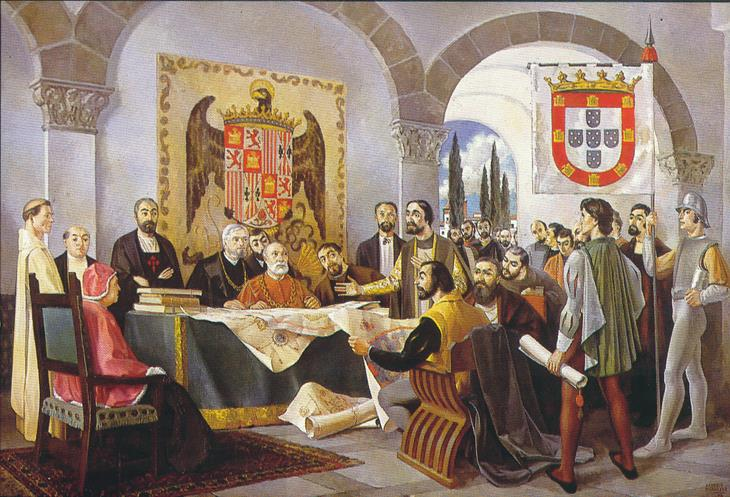

Linha do Tempo do Rio das TrevasTratado de Tordesilhas - 7 de junho de 1494.

Vinda do Primeiro Reinante da Camarilla, a Dama de Branco, responsável pela Capitania de São Vicente. Neste ano surge a primeira vila de São Vicente.Chegada da Camarilla de PortugalFim das capitanias junto a abertura dos portos do BrasiRevolta dos Membros responsáveis pelas Capitanias, Revolta PernambucanaUma tentativa de Príncipe, Manuel Fagundes é selecionada, ele reina uma corte descentralizada, desestrutural e desconexa do Ciclo Interno. Entretanto, existe abundância de sangue - existe uma ruptura de ideais entre os Membros e os abraçados. Manuel viaja e fica quinze anos ausente.
Manuel viaja e fica quinze anos ausente.Nasce um poder paralelo chamado Conclave de Sangue. Não é Anarch, Não é Camarilla Oficial, é porém uma organização sem príncipe. Três membros “reinam” por esse período, divorciados da coroa portuguesa e de sua Camarilla e focados em manter a máscara e administrar respeitosamente o rebanho do Rio de Janeiro.
- Um Malkav
- Tzimisce
- Brujah
Mentores de Dom Pedro?A Bicha voltou.A Bicha morreu. É morto Arnaldo Picão, o caçador de vampiros.
Conclave de Sangue é oficializada pela Camarilla, e reina até 1888Retirada da Conclave e começar a Era do João da Prata junto a proclamação da republica.João da Prata é deposto por Castelo Branco junto ao golpe militar, começa o periodo de troca rápidas de principesÚltimo príncipe do periodo de trocas, Príncipe temporário: Salomão BragançaComeça o reinado do Príncipe Julie Antoine, O Francês, “o principe gringo”Golpe Sabá-Anarch, queda do Principe francês, começa o periodo de Sabá e Anarquia no Rio de JaneiroKauã ergue a CamarillaÉ decretado oficialmente o fim de qualquer influencia Saba no Rio de Janeiro, dando ao Kauã o título de Príncipe do novo Milênio. E recebe as três jóias da Coroa para o auxilio, recebndo também a visita oficial do Carcará.
 Linha do Tempo do Rio das Trevas
Linha do Tempo do Rio das Trevas